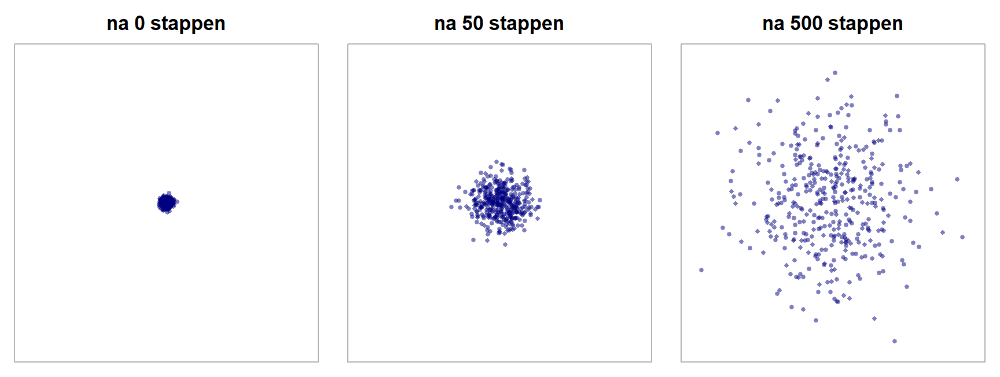
4 Toeval, entropie en transport over membranen
NoteOver dit hoofdstuk
Dit hoofdstuk is geen tentamenstof. Het is een nieuw onderdeel van het portfolio. Het laat zien hoe we waarnemingen, intuïtie en begrippen stap voor stap omzetten in een wiskundige formule. Lees het om te volgen hoe die vertaling werkt: van een druppel inkt naar de diffusiecoëfficiënt, van een membraan naar osmotische druk, van een pomp naar vrije energie. Je hoeft aan het eind niet alles zelf te kunnen afleiden. De formules die je nodig hebt, staan in de tekst; waar ze vandaan komen, staat voor wie dat wil in de Verdiepingen aan het eind. De opdracht aan het eind hoort bij je portfolio.
Een bevruchte eicel heeft geen bloedvaten, geen hart en geen longen. Alles wat er in de eerste dagen van de ontwikkeling beweegt (zuurstof, glucose, ionen en signaalmoleculen) beweegt door diffusie en door transport over membranen. Toch bouwt een muizenembryo binnen een paar dagen een holte vol vocht, het blastocoel, die het embryo letterlijk opblaast.
In de colleges over membranen hebben jullie gezien wat er gebeurt: diffusie, osmose, passief en actief transport. In dit hoofdstuk gaat het om de vraag waarom het gebeurt, aan de hand van vier vragen:
- Waarom verspreiden moleculen zich?
- Waarom stopt dat bij een gelijke verdeling, en is dat evenwicht een statische toestand?
- Wat als de opgeloste stof niet door het membraan kan: hoe ontstaat dan een evenwicht met een drukverschil?
- Wanneer kost transport energie?
Het antwoord op alle vier is verrassend eenvoudig: toeval en tellen. Er bestaat geen kracht die moleculen gericht naar de lage concentratie duwt.
4.1 Waarom verspreiden moleculen zich?
4.1.1 Wat je ziet
Doe een druppel inkt in een glas water, en de inkt verspreidt zich langzaam, ook als je niet roert. De simulatie hieronder laat dat zien. Elk molecuul zet daarin per tijdstap één stapje in een willekeurige richting (hier in twee dimensies: naar links of rechts én naar boven of beneden). Niemand stuurt de moleculen, en toch wordt de wolk steeds breder.
4.1.2 Waarom het gebeurt
Een opgelost molecuul wordt voortdurend gebotst door watermoleculen en verandert daardoor biljoenen keren per seconde van richting. Het heeft geen idee waar de andere moleculen zijn, en het heeft geen geheugen: elke stap is onafhankelijk van de vorige. Het eenvoudigste model hiervoor is munt opgooien. Elke tijdstap \(\tau\) zet het molecuul een stap \(\ell\): bij kop naar rechts (\(+\ell\)), bij munt naar links (\(-\ell\)). Dit heet een random walk in één dimensie.
In de simulatie hieronder gooien 1000 moleculen elk 10 keer een munt. Links zie je de paden van 20 moleculen, rechts waar alle 1000 na 10 stappen uitkomen.
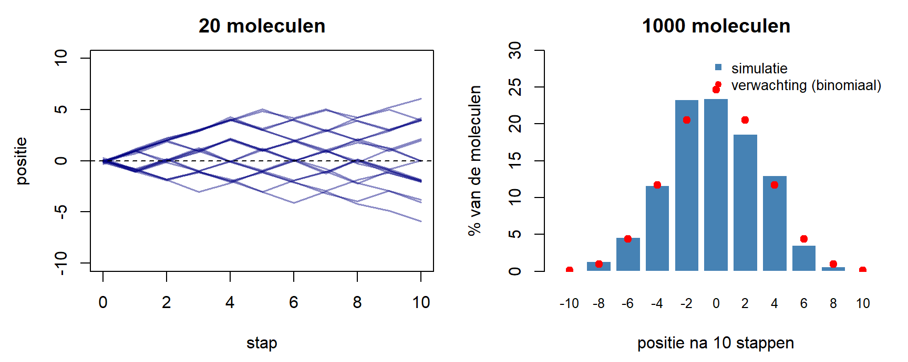
Ongeveer een kwart van de moleculen staat na 10 stappen weer op het beginpunt (in deze simulatie 23 %). Een paar zetten alle 10 stappen naar dezelfde kant, net zoals je 10 keer achter elkaar kop kunt gooien. De kans daarop is \((\tfrac{1}{2})^{10} + (\tfrac{1}{2})^{10} \approx 0{,}2\,\%\): alles links of alles rechts. In de simulatie overkomt dat 1 van de 1000 moleculen.
Wat gebeurt er als de moleculen langer doorgaan? De figuur hieronder vergelijkt 10 en 40 stappen. Elke stap is één worp met de munt. Gemiddeld staan de moleculen nog steeds op hun beginpunt, maar de spreiding groeit: na vier keer zoveel stappen is de wolk ongeveer twee keer zo breed.
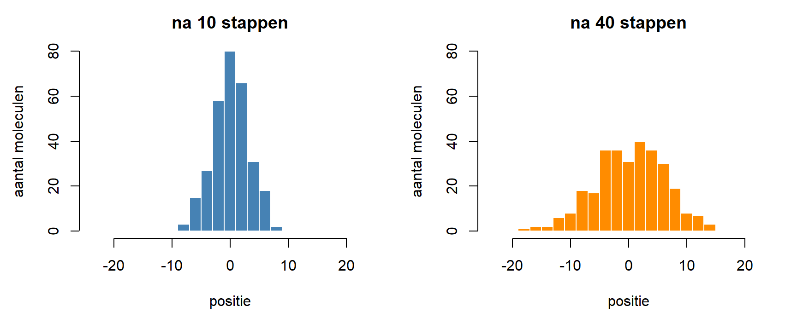
4.1.3 Hoe snel groeit de spreiding?
Na \(n\) stappen staat een molecuul op
\[ x = s_1 + s_2 + \dots + s_n, \qquad \text{waarbij elke stap } s_i = +\ell \text{ of } -\ell . \]
De afgelegde weg is voor elk molecuul hetzelfde, namelijk \(n\ell\). De verplaatsing \(x\) verschilt per molecuul, omdat stappen naar links en naar rechts elkaar deels opheffen. Gemiddeld over veel moleculen is \(x = 0\): eindpunten links (\(x < 0\)) en rechts (\(x > 0\)) heffen elkaar op. Om de spreiding te meten, kwadrateren we eerst. Een molecuul op \(-4\) telt dan even zwaar als een op \(+4\), want \((-4)^2 = (+4)^2 = 16\). Daarna middelen we over alle moleculen. Dat gemiddelde schrijven we met hoekhaken: \(\langle x^2 \rangle\).
Dit kennen jullie uit de statistiek. De variantie is het gemiddelde van de gekwadrateerde afwijkingen ten opzichte van het gemiddelde. Hier is het gemiddelde nul, dus de afwijking is gewoon de positie zelf:
\[ \langle x^2 \rangle = \frac{1}{N} \sum_{i=1}^{N} x_i^2 = \text{variantie van de posities}, \]
met \(N\) het aantal moleculen. Omdat het gemiddelde van \(x\) nul is, is het gemiddelde van \(x^2\) dus gelijk aan de variantie van \(x\). De wortel \(\sqrt{\langle x^2 \rangle}\) is de standaarddeviatie: de typische afstand tot het beginpunt.
De figuur hieronder laat zien wat kwadrateren en worteltrekken doen. Per molecuul is \(\sqrt{x^2} = |x|\): de negatieve posities worden naar boven gespiegeld, en je houdt de afstand tot het beginpunt over, ongeacht de kant. Let op de volgorde. Eerst middelen en dan de wortel nemen geeft \(\sqrt{\langle x^2 \rangle}\); eerst de wortel per molecuul en dan middelen geeft de gemiddelde afstand \(\langle |x| \rangle\). Die twee zijn net niet gelijk: \(\sqrt{\langle x^2 \rangle}\) is iets groter, omdat het kwadrateren de verre moleculen zwaarder laat meetellen. We gebruiken \(\langle x^2 \rangle\) omdat de kwadraten netjes optellen, zoals we zo zien.
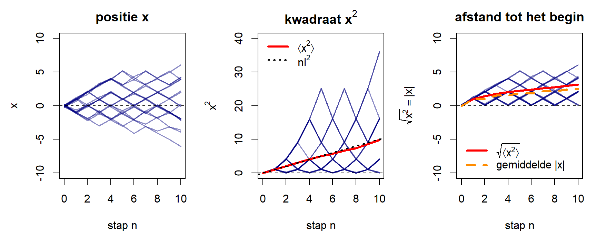
Na 10 stappen is in deze simulatie \(\langle x^2 \rangle = 9{,}84\) (theorie: 10), \(\sqrt{\langle x^2 \rangle} = 3{,}14\) en de gemiddelde \(|x|\) is \(2{,}47\). De middelste plot is het belangrijkst: de afzonderlijke kwadraten schieten alle kanten op, maar hun gemiddelde groeit lineair met het aantal stappen.
Twee stappen. De simulatie laat zien dat \(\langle x^2 \rangle\) lineair groeit met het aantal stappen. Maar waarom, en met hoeveel per stap? Dat bepaalt hoe snel de wolk breder wordt, en daarmee de diffusiecoëfficiënt \(D\). We beginnen met het kleinste geval. Neem veel moleculen die elk twee stappen zetten. Er zijn \(2 \times 2 = 4\) paden, en elk pad wordt door ongeveer een kwart van de moleculen gevolgd. Het gemiddelde over de moleculen is dus het gemiddelde over de vier paden. Om te zien waar het resultaat vandaan komt, werken we het kwadraat uit, net als \((a+b)^2 = a^2 + b^2 + 2ab\):
\[ x^2 = (s_1 + s_2)^2 = \underbrace{s_1^2 + s_2^2}_{\text{altijd } 2\ell^2} + \underbrace{2\, s_1 s_2}_{\text{kruisterm: } \pm 2\ell^2} \]
| pad | \(s_1\) | \(s_2\) | \(s_1^2 + s_2^2\) | \(2\,s_1 s_2\) | \(x^2\) |
|---|---|---|---|---|---|
| rechts, rechts | \(+\ell\) | \(+\ell\) | \(2\ell^2\) | \(+2\ell^2\) | \(4\ell^2\) |
| rechts, links | \(+\ell\) | \(-\ell\) | \(2\ell^2\) | \(-2\ell^2\) | \(0\) |
| links, rechts | \(-\ell\) | \(+\ell\) | \(2\ell^2\) | \(-2\ell^2\) | \(0\) |
| links, links | \(-\ell\) | \(-\ell\) | \(2\ell^2\) | \(+2\ell^2\) | \(4\ell^2\) |
| gemiddeld | \(2\ell^2\) | \(0\) | \(2\ell^2\) |
Geen enkel molecuul heeft precies \(x^2 = 2\ell^2\) (het is \(4\ell^2\) of \(0\)), maar gemiddeld wel. De kruisterm laat zien of twee stappen elkaar versterken of opheffen. Gaan ze dezelfde kant op, dan versterken ze elkaar en is de kruisterm \(+2\ell^2\); gaan ze tegengesteld, dan heffen ze elkaar op en is hij \(-2\ell^2\). Omdat het molecuul zijn vorige stap niet onthoudt, komen beide even vaak voor: gemiddeld is de kruisterm nul.
Bij \(n\) stappen werkt het precies zo: \(n\) kwadraten van elk \(\ell^2\), en alle kruistermen zijn gemiddeld nul. Elke stap voegt dus gemiddeld \(\ell^2\) toe:
\[ \langle x^2 \rangle = n\,\ell^2 . \]
4.1.4 Van stappen naar tijd: de diffusiecoëfficiënt
In een tijd \(t\) zet een molecuul \(n = t/\tau\) stappen. Dan wordt
\[ \langle x^2 \rangle = n\,\ell^2 = \frac{\ell^2}{\tau}\, t = 2Dt, \qquad \text{met} \quad \boxed{D = \frac{\ell^2}{2\tau}} . \]
\(D\) heet de diffusiecoëfficiënt (eenheid m²/s). Het is één getal dat het toeval samenvat: de stapgrootte \(\ell\) en de staptijd \(\tau\). De factor 2 is een afspraak; daardoor verschijnt straks precies dezelfde \(D\) in de wet van Fick.
Wat zijn \(\ell\) en \(\tau\) voor een echt molecuul? Een molecuul draait niet ineens om, maar verliest zijn richting geleidelijk door de botsingen. \(\tau\) is de tijd waarin het zijn richting vergeet, en \(\ell\) de afstand die het in die tijd aflegt. Voor glucose in water bij 37 °C is \(\tau\) ongeveer \(10^{-13}\) s (tien biljoen onafhankelijke stappen per seconde) en \(\ell\) ongeveer 0,01 nm, een tiende van de diameter van een atoom. Piepkleine, razendsnelle stapjes; toch komt het molecuul in één seconde zo’n 30 µm ver, want \(n\ell^2 \approx 10^{13} \times (10^{-11}\ \text{m})^2 = 10^{-9}\) m². De details van \(\ell\) en \(\tau\) doen er niet toe; alleen de combinatie \(D = \ell^2/2\tau\) telt.
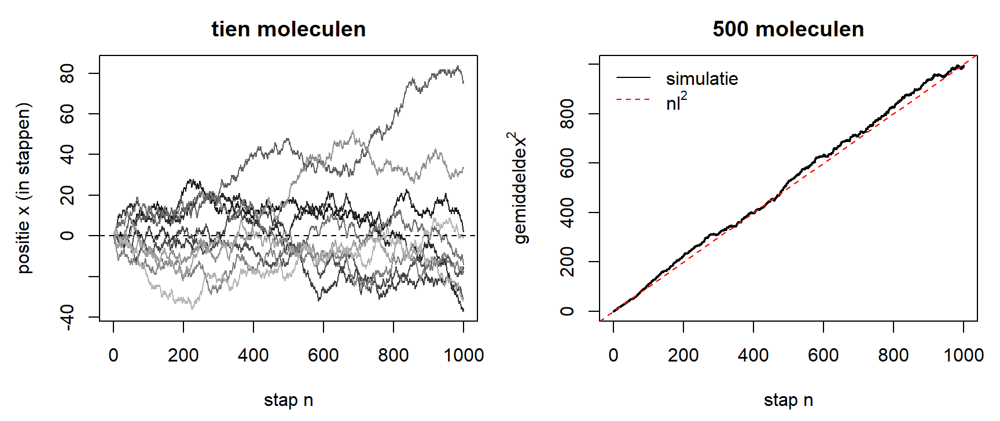
Toeval geeft hier dus een vaste wet. Elk molecuul afzonderlijk is onvoorspelbaar, maar het gemiddelde over veel moleculen volgt precies \(\langle x^2 \rangle = 2Dt\).
4.1.5 Twee keer zo ver duurt vier keer zo lang
De typische afstand \(L\) tot het beginpunt is \(\sqrt{\langle x^2 \rangle}\), dus
\[ L^2 \approx 2Dt \qquad\Longleftrightarrow\qquad t \approx \frac{L^2}{2D}. \]
De tijd groeit met het kwadraat van de afstand:
| afstand | tijd |
|---|---|
| 1× | 1× |
| 2× | 4× |
| 10× | 100× |
| 1000× | 1 000 000× |
Deze formule geldt voor de afstand in één richting, bijvoorbeeld dwars door een membraan of door een kanaal, waarin een molecuul maar één kant op kan. In twee en drie dimensies wordt de factor 2 een 4 en een 6 (\(L^2 \approx 4Dt\) en \(L^2 \approx 6Dt\)), omdat er per richting \(2Dt\) bijkomt. De diffusiecoëfficiënt \(D\) blijft dezelfde, en twee keer zo ver blijft vier keer zo lang.
4.1.6 Hoe groot is \(D\)?
De stapjes worden bepaald door warmte en wrijving. Voor een bolvormig molecuul in een vloeistof geldt de Stokes–Einstein-relatie:
\[ D = \frac{\ell^2}{2\tau} = \frac{kT}{6\pi\eta r}. \]
- Boven de streep: \(kT\), de thermische energie van een molecuul. \(T\) is de temperatuur in kelvin en \(k\) de constante van Boltzmann. Warmte zorgt voor de botsingen en drijft de beweging aan.
- Onder de streep: \(6\pi\eta r\), de wrijving met de vloeistof. \(\eta\) is de viscositeit (stroperigheid) en \(r\) de straal van het molecuul. Wrijving remt de beweging af.
Een groter molecuul diffundeert dus langzamer, maar minder dan je misschien zou denken. Eiwitten hebben ongeveer allemaal dezelfde dichtheid, dus een eiwit met een duizend keer zo groot volume (en dus ook ongeveer duizend keer zo zwaar) heeft een straal die maar \(\sqrt[3]{1000} = 10\) keer zo groot is. Het diffundeert dan tien keer zo langzaam. Waar de Stokes–Einstein-relatie vandaan komt, staat in Verdieping A.
4.1.7 Getallen
| Molecuul | D (µm²/s) | 10 µm (cel) | 1 mm | 1 cm | 1 m |
|---|---|---|---|---|---|
| zuurstof (O2) | 1900 | 0,026 s | 4,3 min | 7,2 uur | 8,2 jaar |
| glucose | 870 | 0,058 s | 9,6 min | 16 uur | 18 jaar |
| eiwit (~50 kDa) | 130 | 0,38 s | 1,1 uur | 4,4 dagen | 120 jaar |
Binnen een cel is diffusie snel: een fractie van een seconde. Over millimeters wordt ze traag en over centimeters onbruikbaar. Diffusie verloopt niet lineair met de afstand. Voor glucose is 1 meter 100 000 keer zo ver als 10 µm, maar het duurt ongeveer 10 miljard keer zo lang: 18 jaar tegenover een twintigste seconde. Een lineaire schatting zou voor 10 µm ruim anderhalf uur geven; dat geldt voor iets dat met constante snelheid rechtdoor gaat, niet voor diffusie.
(In cytoplasma, dat voller en stroperiger is dan water, gaat diffusie nog enkele malen langzamer. Voor kleine moleculen zoals zuurstof is Stokes–Einstein maar een benadering: gemeten is \(D\) daar ongeveer anderhalf keer zo groot.)
Omdat \(t \approx L^2/2D\) een machtsfunctie is, geeft een figuur met logaritmische assen een rechte lijn met helling 2, net als bij de allometrische schaalrelaties.
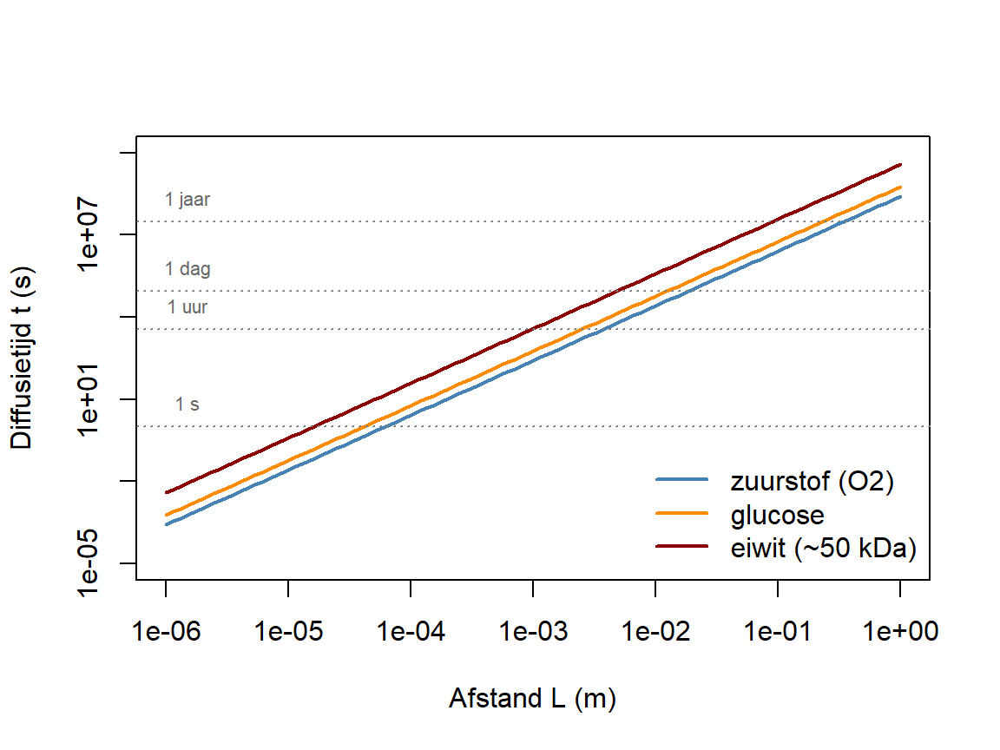
4.1.8 Wat het betekent voor de biologie
Organismen die het zonder transportsysteem doen, zijn klein of plat, zoals eencelligen en platwormen. Een embryo van een gewerveld dier loopt tegen dezelfde grens aan zodra het een paar millimeter groot wordt: het hart is het eerste orgaan dat gaat werken. Planten lossen hetzelfde probleem op met stroming (bulk flow) in xyleem en floëem. Bij stroming groeit de transporttijd evenredig met de afstand, niet met het kwadraat ervan.
4.1.9 Van toeval naar stroom: de wet van Fick
Waarom gaat er netto meer stof van hoge naar lage concentratie? Neem twee aangrenzende compartimenten met links 8 en rechts 2 moleculen. Elk molecuul heeft dezelfde kans, zeg 50 %, om naar de andere kant te springen. Van links gaan er dan ongeveer 4 naar rechts, van rechts ongeveer 1 naar links. Netto gaan er 3 naar rechts, alleen omdat er links meer moleculen zijn.
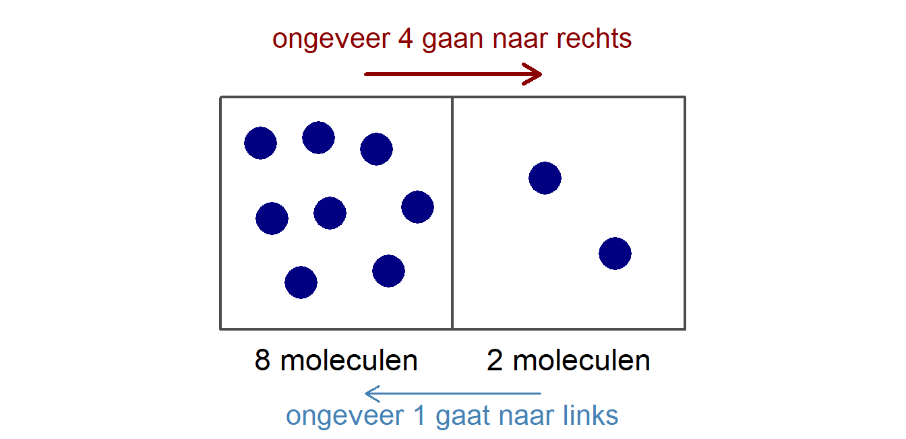
Dit idee kunnen we precies maken met dezelfde stapjes als in de random walk. Neem twee aangrenzende laagjes, elk met dikte \(\ell\) (één stap) en oppervlak \(A\), met \(N_L\) en \(N_R\) moleculen. De dikte is precies één stap, omdat alleen moleculen binnen afstand \(\ell\) van de grens er in één stap overheen kunnen.
- Netto aantal per stap. In een tijdstap \(\tau\) springt de helft van de moleculen in elk laagje naar de andere kant. Netto gaan er \(\tfrac{1}{2}(N_L - N_R)\) van links naar rechts.
- Flux. De flux \(J\) is het aantal per oppervlak en per tijd: \(J = \dfrac{N_L - N_R}{2A\tau}\).
- Van aantallen naar concentraties. Een laagje heeft volume \(A\ell\), dus \(N = C \cdot A\ell\) en \(N_L - N_R = A\ell\,(C_L - C_R)\).
- Concentratieverschil als helling. \(C_L\) en \(C_R\) zijn de gemiddelde concentraties in de laagjes, ongeveer de concentratie in hun midden. De middens van de laagjes liggen een afstand \(\ell\) uit elkaar, dus \(C_L - C_R \approx -\ell\, \dfrac{\partial C}{\partial x}\).
De formule in beweging. In de animatie beginnen 20 000 moleculen bijna allemaal links. Elk molecuul springt per stap met kans ½ naar links of naar rechts. Het onderste paneel vergelijkt de netto stroom die in de simulatie is geteld (oranje) met wat de wet van Fick voorspelt (zwarte lijn).
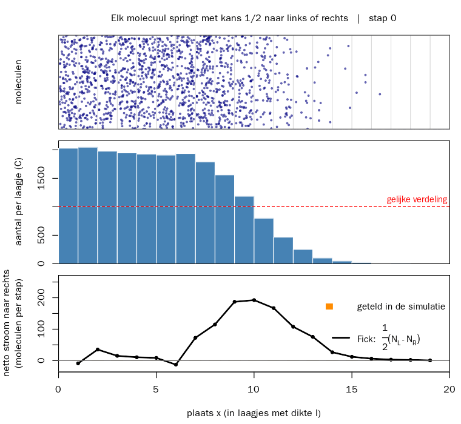
Let op drie dingen. De stroom is het grootst waar het profiel het steilst is. Naarmate het profiel vlakker wordt, neemt de stroom af. En de getelde stroom schommelt rond de voorspelling: de wet van Fick geldt voor het gemiddelde, niet voor elke stap afzonderlijk.
Invullen geeft de wet van Fick:
\[ J = \frac{A\ell \cdot \left(-\ell\,\frac{\partial C}{\partial x}\right)}{2A\tau} = -\frac{\ell^2}{2\tau}\,\frac{\partial C}{\partial x} = -D\,\frac{\partial C}{\partial x}. \]
Dit is dezelfde \(D\) als in de random walk. \(J\) is de stroom (hoeveel stof per seconde door een oppervlak van 1 m² gaat). \(C\) is de concentratie van de stof die diffundeert, als hoeveelheid per volume, bijvoorbeeld in mol/m³ (1 mM = 1 mol/m³); dan is \(J\) in mol per m² per seconde. Elke stof heeft zijn eigen gradiënt en zijn eigen stroom. \(\partial C/\partial x\) zegt hoe steil de concentratie verandert met de plaats. Het kromme \(\partial\) betekent: kijk alleen naar de verandering met de plaats \(x\) en houd de tijd vast; de concentratie hangt namelijk af van plaats én tijd. Het minteken zegt dat de stroom van hoog naar laag gaat.
De historische volgorde is omgekeerd aan die in dit hoofdstuk. Adolf Fick, een fysioloog, vond deze wet in 1855 als beschrijving van wat hij mat, naar analogie van de warmtewet van Fourier; \(D\) was voor hem een gemeten constante. Pas in 1905 lieten Einstein (en onafhankelijk Smoluchowski in 1906) zien dat de wet volgt uit willekeurige moleculaire stappen, toen nog niet iedereen geloofde dat moleculen bestaan. Jean Perrin bevestigde dat in 1908–1909 met metingen aan Brownse beweging.
Als de concentratie overal gelijk is, is \(\partial C/\partial x = 0\) en dus \(J = 0\): er is geen netto stroom meer. Dat is evenwicht, en dat klopt met je intuïtie: als het overal even vol is, is er geen reden om ergens heen te stromen.
Bij een dun membraan kennen we niet hoe de concentratie in het membraan verloopt, alleen de concentraties aan beide kanten. Daarom vervangen we de helling door het verschil tussen beide kanten: \(J = P\,(C_1 - C_2)\), met \(P\) de permeabiliteit van het membraan. Kanalen en carriers maken \(P\) groter.
ImportantGeen enkel molecuul “weet” waar de lage concentratie is
De kans per molecuul om naar links of naar rechts te springen is altijd gelijk. Er is alleen een netto stroom omdat er aan één kant meer moleculen zijn die die kans krijgen.
De wet van Fick beschrijft de stroom, maar zegt niet waarom een systeem altijd bij de gelijke verdeling uitkomt en nooit vanzelf terug naar alles aan één kant. Om dat te begrijpen, kijken we naar de kans op elke mogelijke verdeling. Zo kunnen we toestanden van een systeem met elkaar vergelijken: welke is het waarschijnlijkst?
4.2 Waarom stopt het bij een gelijke verdeling, en is dat evenwicht statisch?
4.2.1 Wat je ziet
In de simulatie hieronder beginnen 100 moleculen allemaal in het linker compartiment. Elke tijdstap wisselt één willekeurig gekozen molecuul van kant. Het systeem loopt naar 50 links en 50 rechts, en blijft daar rond schommelen. Er zit geen kracht in dit model, alleen toeval.
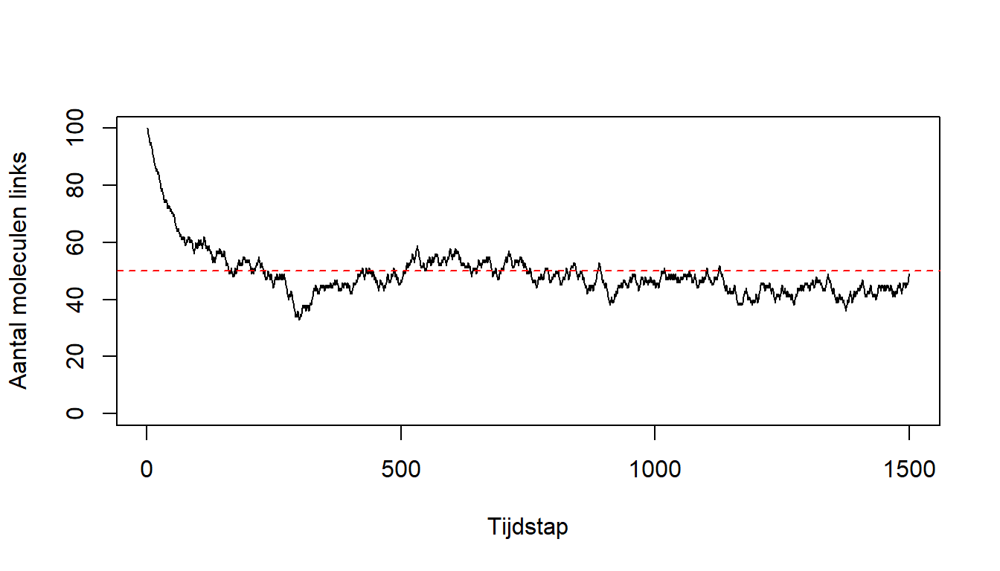
4.2.2 Waarom het gebeurt
De verklaring is tellen. Neem vier moleculen, A, B, C en D. Er zijn 16 manieren om ze over twee compartimenten te verdelen, en die zijn allemaal even waarschijnlijk. Maar ze leiden niet allemaal tot hetzelfde aantal links: alles links kan maar op één manier, twee links en twee rechts op zes manieren.
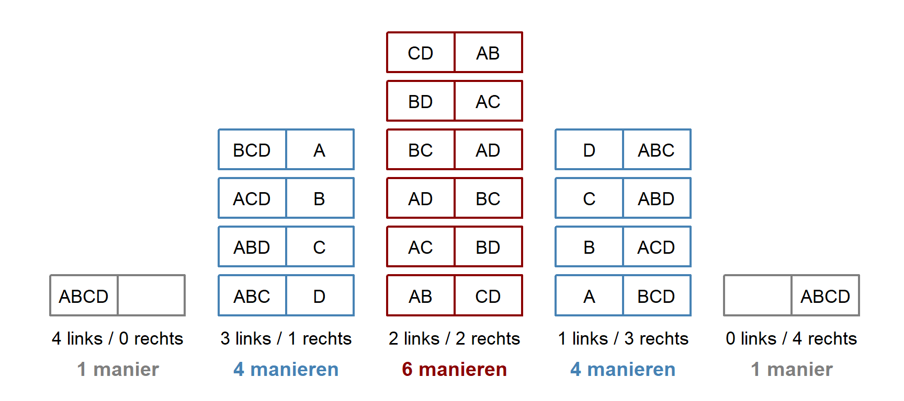
4.2.3 De formule
Het aantal manieren om \(n_L\) van de \(N\) moleculen links te hebben, heet de binomiaalcoëfficiënt:
\[ W(n_L) = \frac{N!}{n_L!\,(N - n_L)!}. \]
Controleer het voor vier moleculen met twee links: \(W = \frac{4!}{2!\,2!} = \frac{24}{4} = 6\).
Hoe meer moleculen, hoe sterker de gelijke verdeling wint. Een druppel (0,05 mL) van een oplossing van 1 mM bevat al ongeveer \(3 \cdot 10^{16}\) opgeloste moleculen. Bij zulke aantallen zijn de schommelingen rond de gelijke verdeling onzichtbaar klein.
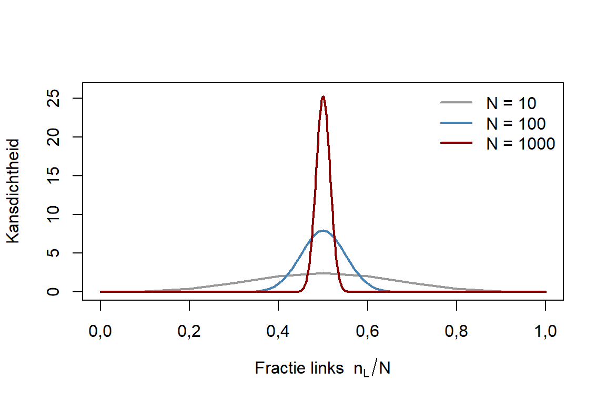
Boltzmann noemde het logaritme van het aantal manieren de entropie:
\[ S = k \ln W. \]
Hier is \(W\) het aantal microtoestanden (rangschikkingen van de afzonderlijke moleculen) dat bij één macrotoestand (zoveel links, zoveel rechts) hoort. Alle microtoestanden zijn even waarschijnlijk, maar de macrotoestanden dus niet: de kans op een macrotoestand is \(W\) gedeeld door het totale aantal microtoestanden. Bij vier moleculen heeft “2 links, 2 rechts” kans \(\tfrac{6}{16}\) en “alles links” maar \(\tfrac{1}{16}\). De letter \(W\) komt van het Duitse Wahrscheinlichkeit; de formule staat op de grafsteen van Boltzmann in Wenen.
Entropie meet dus hoeveel microscopische rangschikkingen bij dezelfde toestand horen. “Alles links” heeft entropie \(k \ln 1 = 0\), omdat het maar op één manier kan. Evenwicht is de toestand met de meeste rangschikkingen: maximale entropie. De tweede hoofdwet is hier geen mysterie. Een systeem belandt vanzelf in de toestand die op verreweg de meeste manieren kan, zoals een geschud pak kaarten nooit vanzelf terug in de keurige volgorde komt.
4.2.4 Van Shannon naar Boltzmann
In het maïshoofdstuk zagen jullie de Shannon-entropie \(H = -\sum_i p_i \log_2 p_i\). In de natuurkunde heet dezelfde formule, met \(\ln\) en de constante \(k\), de Gibbs-entropie: \(S = -k \sum_i p_i \ln p_i\). Als alle \(W\) rangschikkingen even waarschijnlijk zijn, is elke kans \(p_i = 1/W\). Alle \(W\) termen van de som zijn dan gelijk:
\[ S = -k \sum_{i=1}^{W} \frac{1}{W} \ln \frac{1}{W} = -k \cdot W \cdot \frac{1}{W} \ln \frac{1}{W} = -k \ln \frac{1}{W} = k \ln W . \]
De formule van Boltzmann is dus het speciale geval waarin alle mogelijkheden even waarschijnlijk zijn; de formule van Gibbs en Shannon werkt ook als dat niet zo is. Het verschil tussen bits en \(k\) is alleen een eenheid: met gelijke kansen is \(H = \log_2 W\), en \(S = k \ln W = (k \ln 2)\,H\). Elke bit is dus \(k \ln 2\) entropie. Bij de vier moleculen zijn er 16 rangschikkingen: \(H = \log_2 16 = 4\) bits, één bit per molecuul (links of rechts?).
4.2.5 Evenwicht is niet statisch, maar statistisch
In evenwicht staan de moleculen niet stil. Door warmte blijven ze bewegen, met biljoenen botsingen per seconde. Bij 50 links en 50 rechts gaan er voortdurend moleculen heen en weer, evenveel in beide richtingen. Alleen de gemiddelden liggen vast: de stromen in beide richtingen zijn gelijk, dus er is geen netto stroom. Dit heet een dynamisch evenwicht. Daarom schommelt de lijn in de simulatie rond 50. Bij \(10^{16}\) moleculen zijn die schommelingen onzichtbaar klein, maar de beweging gaat gewoon door.
Wat is er in evenwicht dan veranderd ten opzichte van het begin? Niet de kansen: elk molecuul heeft nog steeds 50 % kans om over te steken. Wel de aantallen: links en rechts zitten nu evenveel moleculen. Met dezelfde kans van 50 % gaan er dan evenveel naar links als naar rechts.
4.2.6 En bij ionen?
Voor een ion telt ook de lading. De binnenkant van een cel is negatief (ongeveer \(-70\) mV) en trekt positieve ionen aan. Een Na⁺-ion heeft daardoor een grotere kans om naar binnen te springen dan naar buiten: bij \(-70\) mV ongeveer 14 keer zo groot. Het evenwicht ligt dan niet meer bij gelijke concentraties, maar waar het effect van de concentratie en het effect van de lading elkaar precies opheffen. Dat geeft de Nernst-vergelijking (Verdieping D). Bij vraag 4 komt de lading terug als tweede helling: de elektrochemische gradiënt.
4.3 Wat als de opgeloste stof niet door het membraan kan?
Hoe ontstaat dan een evenwicht, en waarom hoort daar een drukverschil bij?
4.3.1 Wat je ziet
Neem een membraan dat water doorlaat, maar een opgeloste stof niet. Aan beide kanten zit opgeloste stof, links weinig en rechts veel. Water stroomt dan netto naar rechts.
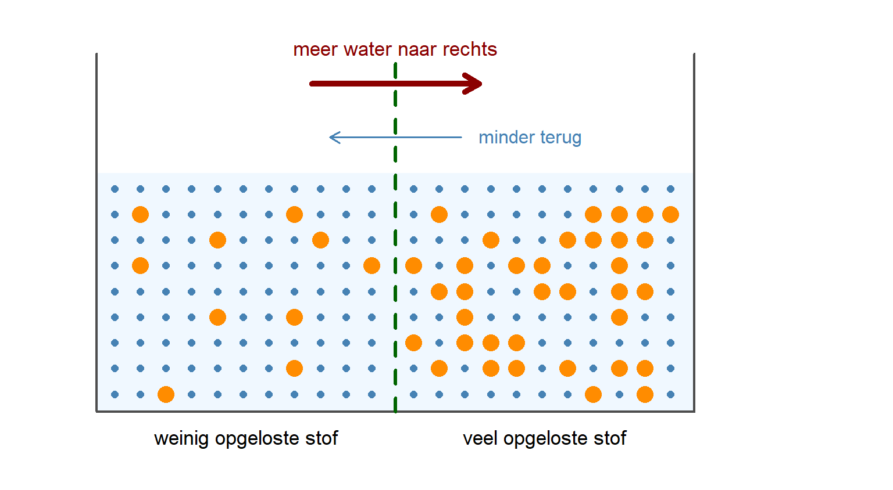
4.3.2 Waarom het gebeurt: tellen
Elk watermolecuul heeft aan beide kanten dezelfde kans om door het membraan te gaan. Maar rechts zijn meer plekken bezet door opgeloste deeltjes, dus per volume zijn er rechts minder watermoleculen. Er gaan per seconde daarom meer watermoleculen naar rechts dan terug. Het is hetzelfde argument als bij de 8 en 2 moleculen, maar nu voor water.
4.3.3 Waarom het gebeurt: entropie
Een klein rekenvoorbeeld maakt zichtbaar wat er met de entropie gebeurt. Denk aan een rooster van plekken die elk door één water- of één opgelost deeltje worden ingenomen. Het aantal rangschikkingen is het aantal manieren om de opgeloste deeltjes over de plekken te verdelen: de binomiaalcoëfficiënt. We verplaatsen één watermolecuul van links naar rechts:
| begin | rangschikkingen | na verplaatsen | rangschikkingen | |
|---|---|---|---|---|
| links | 6 plekken: 1 opgelost, 5 water | \(\binom{6}{1} = 6\) | 5 plekken: 1 opgelost, 4 water | \(\binom{5}{1} = 5\) |
| rechts | 6 plekken: 2 opgelost, 4 water | \(\binom{6}{2} = 15\) | 7 plekken: 2 opgelost, 5 water | \(\binom{7}{2} = 21\) |
Elke rangschikking links kan met elke rangschikking rechts samengaan, dus het aantal voor het hele systeem is het product van beide kanten, zoals twee dobbelstenen samen \(6 \times 6 = 36\) uitkomsten hebben. Het is dezelfde productregel als bij de \(2 \times 2 = 4\) paden van de random walk. In het begin zijn er dus \(6 \times 15 = 90\) rangschikkingen. Omdat de logaritme van een product de som van de logaritmes is, tellen entropieën daardoor op: \(S = k \ln(W_L W_R) = S_L + S_R\), de additiviteit van entropie uit het maïshoofdstuk.
Een watermolecuul kan vanuit deze begintoestand twee kanten op. Welke richting is waarschijnlijker?
| één watermolecuul gaat | links | rechts | hele systeem |
|---|---|---|---|
| naar rechts | 1 opgelost, 4 water: \(\binom{5}{1} = 5\) | 2 opgelost, 5 water: \(\binom{7}{2} = 21\) | \(5 \times 21 = 105\) |
| naar links | 1 opgelost, 6 water: \(\binom{7}{1} = 7\) | 2 opgelost, 3 water: \(\binom{5}{2} = 10\) | \(7 \times 10 = 70\) |
Naar rechts levert meer rangschikkingen op (105 > 90), naar links minder (70 < 90). Daarom gaat water netto naar de kant met meer opgeloste stof.
Links neemt de entropie iets af, want daar verdwijnt water. Rechts neemt ze meer toe, want daar wordt de oplossing verdund. Een extra watermolecuul levert vooral nieuwe rangschikkingen op als er veel opgeloste deeltjes zijn om mee te mengen; in zuiver water maakt het niet uit waar een extra watermolecuul komt, want alle watermoleculen zijn gelijk. Netto neemt de entropie van het hele systeem toe.
Water wordt dus niet aangetrokken door de opgeloste stof; het water lost de ongelijkheid op die de opgeloste stof zelf niet kan oplossen.
4.3.4 Hoeveel entropie wint één watermolecuul?
Met \(N_w\) watermoleculen en \(N_s\) opgeloste deeltjes is het aantal rangschikkingen \(W = \dfrac{(N_w + N_s)!}{N_w!\,N_s!}\). Komt er één watermolecuul bij, dan wordt dat
\[ \frac{W_\text{na}}{W_\text{voor}} = \frac{N_w + N_s + 1}{N_w + 1} \approx 1 + \frac{N_s}{N_w} \approx 1 + x_s , \]
waarin \(x_s\) het aandeel opgeloste deeltjes is. (In het rooster rechts: \(\tfrac{7}{5} = 1{,}4\).) Met \(S = k \ln W\) en de benadering \(\ln(1 + x) \approx x\) voor kleine \(x\) wordt de entropiewinst
\[ \Delta S \approx k \ln(1 + x_s) \approx k\,x_s . \]
De benadering \(\ln(1+x) \approx x\) werkt omdat de logaritme vlak bij \(x = 0\) bijna een rechte lijn met helling 1 is; de fout is ongeveer \(x/2\). In een biologische oplossing is \(x_s\) heel klein: zuiver water is 55 mol/L, dus cytoplasma met 0,3 osmol/L heeft \(x_s \approx 0{,}3/55 \approx 0{,}005\). De benadering is daar bijna exact.
Eén watermolecuul van links naar rechts verplaatsen levert dus netto
\[ \Delta S \approx k\,(x_{s,\text{rechts}} - x_{s,\text{links}}) . \]
De entropiewinst is evenredig met het verschil in opgeloste deeltjes: de osmolariteit. (In het rooster is \(x_s\) helemaal niet klein, daarom klopt het daar maar ongeveer: \(\ln(105/90) \approx 0{,}15\) tegenover \(\tfrac{2}{6} - \tfrac{1}{6} \approx 0{,}17\).)
4.3.5 Wanneer stopt het?
In een bak met een open bovenkant stijgt het water rechts. De hogere waterkolom duwt water terug. Zodra die druk het effect van de opgeloste stof precies opheft, gaan er evenveel watermoleculen heen als terug: osmotisch evenwicht. Let op: de concentraties zijn dan nog steeds niet gelijk.
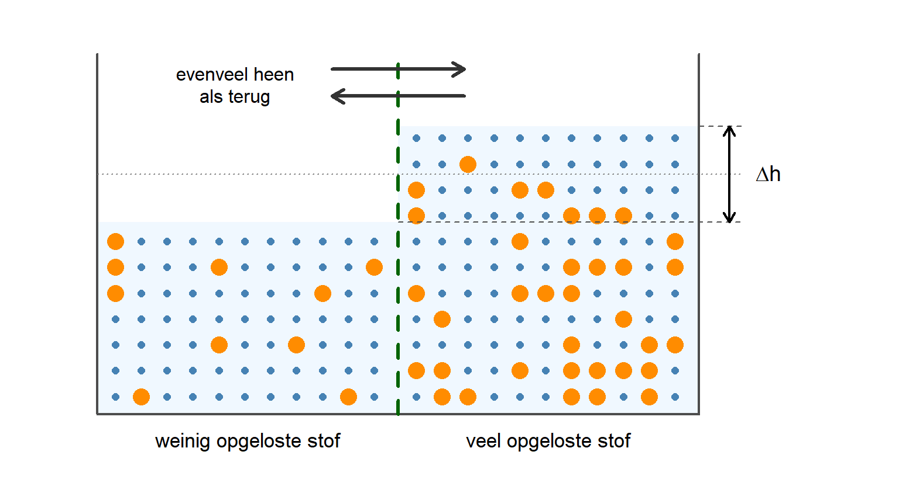
Ook dit evenwicht is niet statisch: door één aquaporine gaan tot wel miljarden watermoleculen per seconde, in evenwicht evenveel heen als terug.
4.3.6 Entropie tegen druk
Elk watermolecuul dat naar rechts gaat, wint entropie: \(\Delta S \approx k\,(x_{s,\text{rechts}} - x_{s,\text{links}})\). Maar het moet ook omhoog tegen de druk in, en dat kost een energie \(\Pi \cdot v\), met \(v\) het volume van één watermolecuul. Bij temperatuur \(T\) is een entropiewinst \(\Delta S\) evenveel waard als een energie \(T\,\Delta S\). In evenwicht zijn winst en kosten precies gelijk:
\[ T\,\Delta S = \Pi\, v \quad\Longrightarrow\quad \Pi = kT\,\frac{x_{s,\text{rechts}} - x_{s,\text{links}}}{v} . \]
\(x_s / v\) is het aantal opgeloste deeltjes per volume. Per mol in plaats van per molecuul geeft dat de wet van van ’t Hoff:
\[ \boxed{\Pi = \Delta C\, R\, T} . \]
De nette afleiding met de chemische potentiaal staat in Verdieping C.
4.3.7 Osmolariteit is entropie
Deel de evenwichtsvoorwaarde \(T\,\Delta S = \Pi\,v\) door \(T\,v\):
\[ \underbrace{\frac{\Pi}{T}}_{\text{druk / temperatuur}} = \underbrace{\frac{\Delta S}{v}}_{\text{entropiewinst per volume verplaatst water}} = R\,\Delta C . \]
Kijk naar de eenheden: \(\dfrac{\text{Pa}}{\text{K}} = \dfrac{\text{J}}{\text{K} \cdot \text{m}^3}\), entropie per volume. Het osmolariteitsverschil \(\Delta C\) zegt dus hoeveel entropie het systeem wint per m³ water dat naar de geconcentreerde kant gaat. De temperatuur \(T\) zet die entropiewinst om in een druk: \(\Pi = T \cdot R\,\Delta C\).
Een voorbeeld: bij \(\Delta C = 300\) mOsm/L \(= 300\) mol/m³ is de entropiewinst \(R\,\Delta C = 8{,}314 \times 300 \approx 2500\) J/(K·m³), ongeveer 2,5 J/K per liter verplaatst water. Maal \(T = 310\) K geeft dat \(\Pi \approx 0{,}77\) MPa.
Opvallend is wat er niet in staat: welke stof het is. Alleen het aantal opgeloste deeltjes telt. Een glucosemolecuul en een groot eiwit leveren per deeltje dezelfde bijdrage. Dat past bij tellen, niet bij aantrekken. Bij zouten tellen alle deeltjes: NaCl levert er twee per formule-eenheid. Daarom rekenen we in osmol, en de osmolariteit in osmol/L.
Let op het verschil tussen \(C\) en \(\Delta C\). \(\Pi = C\,RT\) is de osmotische druk van één oplossing ten opzichte van zuiver water. Zit er aan beide kanten opgeloste stof, dan telt alleen het verschil. Een cel van 300 mOsm/L in een oplossing van 250 mOsm/L heeft \(\Delta C = 50\) mOsm/L, en dan is de druk maar een zesde van die tegen zuiver water.
4.3.8 \(R\), \(k\) en de eenheden
\(R = 8{,}314\) J/(mol·K) is de gasconstante: de constante van Boltzmann, maar dan per mol in plaats van per molecuul. Er geldt \(R = N_A\,k\), met \(N_A = 6{,}022 \cdot 10^{23}\) per mol het getal van Avogadro. \(kT\) is de thermische energie van één molecuul en \(RT\) die van een mol moleculen; bij 37 °C is \(RT = 2{,}58\) kJ/mol.
De eenheden leveren precies een druk op:
\[ \Pi = \underbrace{\Delta C}_{\text{mol/m}^3} \cdot \underbrace{R}_{\text{J/(mol·K)}} \cdot \underbrace{T}_{\text{K}} \quad\rightarrow\quad \frac{\text{J}}{\text{m}^3} = \frac{\text{N·m}}{\text{m}^3} = \frac{\text{N}}{\text{m}^2} = \text{Pa}. \]
Druk is dus energie per volume. Gebruik \(C\) in mol/m³: 1 mOsm/L is 1 mol/m³, anders zit je er een factor 1000 naast. De formule lijkt niet toevallig op de gaswet \(PV = nRT\): van ’t Hoff zag al dat opgeloste deeltjes zich gedragen als de deeltjes van een gas.
\(\Pi\) is een drukverschil. De luchtdruk (ongeveer 0,1 MPa) drukt aan beide kanten even hard en valt dus weg; alleen het verschil tussen beide kanten telt.
4.3.9 Waterpotentiaal en de cel
De waterpotentiaal uit het college over transport in planten zegt hetzelfde in één getal:
\[ \Psi = \Psi_S + \Psi_P , \qquad \Psi_S = -C\,R\,T . \]
\(\Psi_S\) is het “trekken” van de opgeloste stof (negatief), \(\Psi_P\) het “duwen” van de druk. Water stroomt van hoge naar lage \(\Psi\), tot \(\Psi\) aan beide kanten gelijk is.
In een cel werkt het net zo:
- Een cel zonder wand (een dierlijke cel) zwelt op tot de concentraties binnen en buiten gelijk zijn, of tot ze barst.
- Een cel met wand (een plantencel) zwelt op tot de wand terugduwt. Die tegendruk is de turgordruk. De concentraties blijven verschillend.
4.3.10 Getallen
| Situatie | Osmotische druk | Even hoog als een waterkolom van |
|---|---|---|
| cytoplasma (300 mOsm/L) tegen zuiver water | 0,77 MPa | 79 m |
| verschil van 1 mOsm/L | 2,6 kPa | 26 cm |
Osmose is een krachtige motor. Een cel van 300 mOsm/L in zuiver water ontwikkelt in principe evenveel druk als een waterkolom van bijna 80 meter, zo’n 8 keer de luchtdruk. Dat is dezelfde orde van grootte als de turgordruk in plantencellen, ongeveer 0,5 MPa. Al 1 mOsm/L verschil is genoeg voor een waterkolom van 26 cm.
TipTwee veelgehoorde formuleringen, nauwkeuriger
- “Opgeloste stoffen binden water, zodat er minder vrij water is.” Dat water zich om opgeloste deeltjes heen nestelt, klopt, maar het verklaart niet waarom alleen het aantal deeltjes telt. De fundamentele oorzaak is tellen: de mengentropie.
- “Water stroomt tot de concentraties aan beide kanten gelijk zijn.” Dat geldt alleen als het volume vrij kan veranderen. In het algemeen stroomt water tot \(\Psi\) aan beide kanten gelijk is.
4.3.11 Denkvraag
Een rode bloedcel in gedestilleerd water zwelt op en barst. Leg uit waarom, zonder het woord “aantrekken” te gebruiken. Gebruik in je uitleg: kans, aantal watermoleculen, rangschikkingen, volume en druk.
TipAntwoord
- Binnen zijn per volume minder watermoleculen dan in het zuivere water buiten.
- Elk watermolecuul heeft dezelfde kans om door het membraan te gaan, dus er gaan er meer naar binnen dan naar buiten. Het systeem wint daarbij rangschikkingen: water mengt binnen met de opgeloste deeltjes, buiten valt niets te mengen.
- Het volume van de cel neemt toe en de inhoud verdunt, maar de concentraties worden nooit gelijk: buiten blijft het zuiver water.
- Stoppen kan alleen door tegendruk: \(\Pi = \Delta C\,RT\) met \(\Delta C = 300 - 0 = 300\) mOsm/L, ongeveer 0,8 MPa, zo’n 8 keer de luchtdruk. Een cel zonder wand kan die druk niet leveren: hij zwelt op van een platte schijf tot een bol, daarna kan het membraan nauwelijks verder rekken, en hij barst (hemolyse). Een plantencel overleeft dit wel: de celwand levert de tegendruk (turgor).
4.4 Wanneer kost transport energie?
4.4.1 Wat je ziet
Cellen houden concentratieverschillen in stand die vanzelf zouden verdwijnen. Een dierlijke cel bevat bijvoorbeeld ongeveer 12 mM Na⁺, terwijl er buiten ongeveer 145 mM is. Na⁺ lekt dus voortdurend naar binnen, en de cel pompt het voortdurend weer naar buiten.
4.4.2 Waarom: bergaf en bergop
Je kunt vrije energie \(G\) zien als een hoogte. Een stof die van hoge naar lage concentratie gaat, gaat bergaf: dat gebeurt vanzelf (passief transport). Van lage naar hoge concentratie is bergop: dat gebeurt alleen als er energie wordt geleverd, meestal door ATP (actief transport).
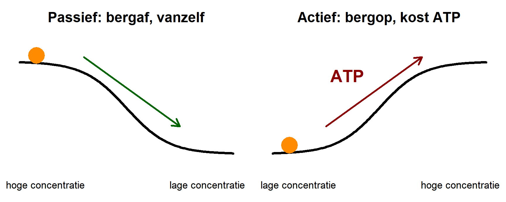
Waarom is “bergaf” de richting van hoge naar lage concentratie? Omdat dat de richting is waarin het aantal rangschikkingen, en dus de entropie, toeneemt. De vrije energie \(G = H - TS\) combineert energie (\(H\)) en entropie (\(S\)). Bij het verplaatsen van opgeloste stof verandert vooral de entropie, en dan is de hoogte van de berg \(-T\) maal de entropieverandering. De temperatuur bepaalt hoeveel een entropieverschil “waard” is.
4.4.3 De formule
De hoogte van de berg (de verandering in vrije energie per mol) voor transport van compartiment 1 naar compartiment 2 is
\[ \Delta G = RT \ln \frac{C_2}{C_1} . \]
- \(\Delta G < 0\): bergaf, passief transport, gebeurt vanzelf.
- \(\Delta G > 0\): bergop, actief transport, kost energie.
- \(\Delta G = 0\): evenwicht.
Bij 37 °C is \(RT = 2{,}58\) kJ/mol. Elke factor 10 in concentratie is dus \(RT \ln 10 \approx 5{,}9\) kJ/mol hoogteverschil.
Voor een ion komt er een tweede helling bij: de lading. De binnenkant van een cel is negatief (ongeveer \(-70\) mV). Een positief ion als Na⁺ wil daarom om twee redenen naar binnen: buiten is de concentratie hoger, en binnen trekt de negatieve lading. Samen heet dat de elektrochemische gradiënt:
\[ \Delta G = RT \ln \frac{C_2}{C_1} + zF\,\Delta\psi . \]
Hier is \(z\) de lading van het ion (+1 voor Na⁺, +2 voor Ca²⁺), \(F = 96\,485\) C/mol de constante van Faraday en \(\Delta\psi = \psi_2 - \psi_1\) het verschil in elektrische potentiaal. Waar de eerste term vandaan komt, staat in Verdieping B.
4.4.4 Getallen: wat kan één ATP betalen?
Eén ATP levert in de cel ongeveer 55 kJ/mol. (De standaardwaarde is \(-30{,}5\) kJ/mol, maar de cel houdt ATP en ADP zelf ver uit evenwicht.) Als voorbeeld nemen we calcium, een belangrijk signaal: bij de bevruchting start een Ca²⁺-golf door de eicel de ontwikkeling. De cel houdt Ca²⁺ binnen rond 0,1 µM, terwijl het buiten ongeveer 1 mM is.
| Deel | Delta G (kJ/mol) |
|---|---|
| chemisch (concentratie 10 000 keer hoger buiten) | 23,7 |
| elektrisch (ion gaat van -70 mV naar 0 mV) | 13,5 |
| totaal per mol Ca²⁺ | 37,2 |
Eén Ca²⁺ naar buiten pompen kost ongeveer 37 kJ/mol. Dat past binnen één ATP; twee Ca²⁺ (ongeveer 74 kJ/mol) niet. De calciumpomp in het plasmamembraan verplaatst inderdaad één Ca²⁺ per ATP.
4.4.5 Kanalen zijn tunnels
\(\Delta G\) zegt welke kant een proces op gaat, niet hoe snel. Om door het membraan te komen, moet een ion door de vettige kern van de lipide dubbellaag: een hoge berg, de activeringsenergie. Een kanaal of carrier is een tunnel door die berg. Daardoor gaat oversteken veel sneller: een berg die 20 kJ/mol lager is, maakt het transport ongeveer 2000 keer sneller.
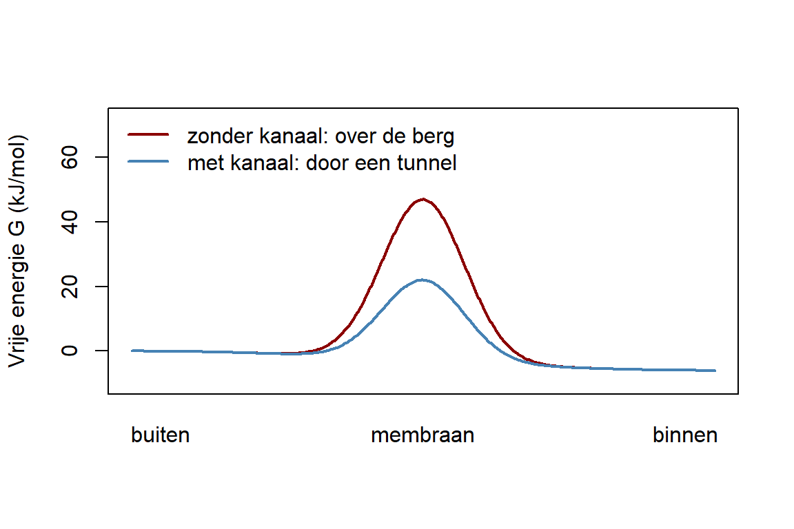
Een tunnel verandert de hoogte van de dalen niet. Door een tunnel kom je nooit bergop. Een transporteiwit is dus een katalysator, net als een enzym: het verandert de snelheid, niet de richting. Een kanaal of een gewone carrier kan daarom nooit tegen een gradiënt in transporteren. Daarvoor is koppeling nodig: aan ATP (een pomp) of aan een andere gradiënt (cotransport).
4.4.6 Een levende cel is een lekke boot
Passieve processen lopen naar evenwicht: maximale entropie, \(\Delta G = 0\), geen netto stromen. Een levende cel is níet in evenwicht. Na⁺ lekt voortdurend naar binnen, en pompen werken het voortdurend weer naar buiten. Het aantal Na⁺ binnen blijft gelijk, maar alleen zolang er ATP is. Zo’n toestand, constant in de tijd maar met voortdurende stromen en energieverbruik, heet een stationaire toestand.
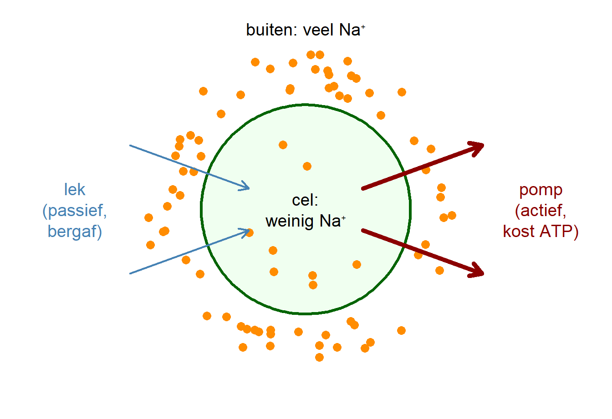
Vergelijk het met een lekke boot. Een volgelopen boot is in evenwicht: er stroomt niets meer. Een lekke boot die je blijft leeghozen, houdt een constant niveau, maar alleen zolang je hoost. Voor een cel betekent evenwicht de dood. Leven is hozen.
Ontwikkeling maakt gebruik van precies deze gradiënten. In de opdracht reken je uit hoe een vroeg embryo met pompen en osmose een holte opblaast, en wat dat kost.
NoteVier vragen, vier antwoorden
- Waarom verspreiden moleculen zich? Door toeval. Elke stap voegt gemiddeld \(\ell^2\) toe aan \(\langle x^2 \rangle\), dus \(\langle x^2 \rangle = 2Dt\) met \(D = \ell^2/2\tau = kT/6\pi\eta r\). De tijd groeit met het kwadraat van de afstand, \(t \approx L^2/2D\), en dezelfde \(D\) staat in de wet van Fick.
- Waarom stopt het bij een gelijke verdeling, en is dat evenwicht statisch? Die toestand kan op de meeste manieren: maximale entropie \(S = k \ln W\). Het evenwicht is niet statisch, maar statistisch: door warmte blijven de moleculen bewegen, alleen de stromen in beide richtingen zijn gelijk.
- Hoe ontstaat een evenwicht met een drukverschil? De opgeloste stof kan zich niet verdelen, dus water stroomt naar de opgeloste stof: het hele systeem wint daarbij rangschikkingen, evenredig met het verschil in opgeloste deeltjes. De druk loopt op tot die entropiewinst precies is opgeheven: \(\Pi = \Delta C\,RT\).
- Wanneer kost transport energie? Als het bergop gaat: \(\Delta G = RT\ln(C_2/C_1) + zF\Delta\psi > 0\). Kanalen zijn tunnels, geen liften; pompen betalen met ATP.
4.5 Verdieping
Hier staat voor wie dat wil waar de formules uit dit hoofdstuk vandaan komen.
NoteVerdieping A: de Stokes–Einstein-relatie afgeleid
Einstein gebruikte een evenwichtsargument. Stel dat er een constante kracht \(F\) op de deeltjes werkt, bijvoorbeeld de zwaartekracht. Dan krijgen de deeltjes een driftsnelheid \(v = F/\gamma\) en een driftstroom \(J_\text{drift} = C F/\gamma\). Tegelijk zorgt diffusie voor een stroom \(J_\text{diff} = -D\, \partial C/\partial x\). In evenwicht verandert \(C\) niet meer met de tijd en hangt het alleen van \(x\) af; daarom schrijven we hieronder de gewone \(d\).
In evenwicht is de totale stroom nul:
\[ D \frac{dC}{dx} = \frac{C F}{\gamma}. \]
Volgens de statistische fysica is de verdeling in evenwicht een Boltzmannverdeling. Met potentiële energie \(U = -Fx\) geldt \(C(x) = C_0\, e^{-U/kT} = C_0\, e^{Fx/kT}\), dus \(dC/dx = C F/kT\). Invullen:
\[ D \frac{CF}{kT} = \frac{CF}{\gamma} \quad\Longrightarrow\quad D = \frac{kT}{\gamma} = \frac{kT}{6\pi\eta r}. \]
Dit is een vroeg voorbeeld van het fluctuatie-dissipatietheorema: dezelfde botsingen die het deeltje willekeurig laten bewegen (fluctuatie), remmen het ook af (dissipatie). Jean Perrin gebruikte deze relatie om met Brownse beweging het getal van Avogadro te bepalen, en leverde daarmee overtuigend bewijs dat atomen bestaan (Nobelprijs 1926).
NoteVerdieping B: van tellen naar vrije energie
Hoeveel verandert de entropie als één molecuul van links naar rechts gaat? Met \(W(n_L) = N!/(n_L!\,n_R!)\) is
\[ \frac{W(n_L - 1)}{W(n_L)} = \frac{n_L}{n_R + 1} \approx \frac{n_L}{n_R}, \qquad\text{dus}\qquad \Delta S = k \ln \frac{n_L}{n_R} = k \ln \frac{C_L}{C_R} \]
(bij gelijke volumes). Per mol, voor transport van compartiment 1 naar 2, is dat \(\Delta S = R \ln (C_1/C_2)\): positief als \(C_1 > C_2\).
In een verdunde oplossing verandert de energie \(H\) bij het verplaatsen van een opgelost molecuul nauwelijks (\(\Delta H \approx 0\)). Met \(G = H - TS\) volgt dan
\[ \Delta G = -T\,\Delta S = RT \ln \frac{C_2}{C_1}. \]
NoteVerdieping C: osmotische druk en waterpotentiaal afgeleid
De chemische potentiaal \(\mu\) is de vrije energie per mol van een stof; een stof stroomt van hoge naar lage \(\mu\). Voor water in een oplossing geldt
\[ \mu_w = \mu_w^\circ + RT \ln x_w + \bar{V}_w P, \]
met \(x_w\) de molfractie water, \(\bar{V}_w\) het molaire volume van water en \(P\) de druk. De term \(RT\ln x_w\) is het entropie-effect: met opgeloste stof is \(x_w < 1\) en ligt \(\mu_w\) lager. De term \(\bar{V}_w P\) is het drukeffect.
Neem links zuiver water (\(x_w = 1\)) en rechts een oplossing met molfractie opgeloste stof \(x_s\) onder extra druk \(\Pi\). In evenwicht is \(\mu_w\) aan beide kanten gelijk:
\[ RT \ln(1 - x_s) + \bar{V}_w \Pi = 0 . \]
Voor kleine \(x\) is \(\ln(1-x) \approx -x\), dus \(\Pi \approx RT\, x_s/\bar{V}_w\). In een verdunde oplossing is \(x_s/\bar{V}_w \approx C_s\), het aantal mol opgeloste stof per volume. Dat geeft \(\Pi = C_s RT\). Zitten aan beide kanten opgeloste stoffen, dan telt het verschil: \(\Pi = \Delta C\, RT\).
De waterpotentiaal is de chemische potentiaal van water, uitgedrukt in drukeenheden:
\[ \Psi = \frac{\mu_w - \mu_w^\circ}{\bar{V}_w} \approx -C_s RT + P = \Psi_S + \Psi_P . \]
NoteVerdieping D: de Nernst-vergelijking
Hetzelfde argument werkt voor een ion in een elektrische potentiaal \(\psi\). De potentiële energie per ion is \(U = ze\psi\), dus in evenwicht geldt \(C \propto e^{-ze\psi/kT}\). De verhouding tussen binnen en buiten is
\[ \frac{C_\text{binnen}}{C_\text{buiten}} = e^{-ze(\psi_\text{binnen} - \psi_\text{buiten})/kT}. \]
Per mol wordt \(e/k\) gelijk aan \(F/R\). Logaritme nemen en omschrijven geeft de Nernst-potentiaal:
\[ E = \psi_\text{binnen} - \psi_\text{buiten} = \frac{RT}{zF} \ln \frac{C_\text{buiten}}{C_\text{binnen}} . \]
Dit is precies de situatie waarin \(\Delta G = RT\ln(C_\text{binnen}/C_\text{buiten}) + zF(\psi_\text{binnen} - \psi_\text{buiten}) = 0\): het chemische en het elektrische deel heffen elkaar op.
Voor K⁺ (buiten 4 mM, binnen 140 mM) bij 37 °C is \(RT/F = 26{,}7\) mV en \(E_\text{K} = 26{,}7 \cdot \ln(4/140) \approx -95\) mV. De rustpotentiaal van ongeveer \(-70\) mV ligt daar dichtbij, omdat het membraan in rust vooral voor K⁺ doorlaatbaar is.
NoteVerdieping E: morfogeengradiënten en positionele informatie
In het Drosophila-ei (ongeveer 500 µm lang) wordt het eiwit Bicoid aan de voorkant gemaakt. Het diffundeert naar achteren en wordt onderweg afgebroken met snelheidsconstante \(k\). In de stationaire toestand geldt
\[ \frac{\partial C}{\partial t} = D \frac{\partial^2 C}{\partial x^2} - kC = 0 \quad\Longrightarrow\quad C(x) = C_0\, e^{-x/\lambda}, \qquad \lambda = \sqrt{D/k}. \]
De lengteschaal \(\lambda\) is gemeten op ongeveer 100 µm, zo’n 20 % van de eilengte. Opvallend is dat de gemeten \(D\) sterk afhangt van de methode: ongeveer 0,3 µm²/s met FRAP (Gregor et al., 2007) tegenover ongeveer 7 µm²/s met FCS (Abu-Arish et al., 2010). Met de lage waarde is het lastig te verklaren hoe de gradiënt snel genoeg ontstaat. Vergelijk beide met de Stokes–Einstein-schatting voor een eiwit van deze grootte in water (ruim 100 µm²/s).
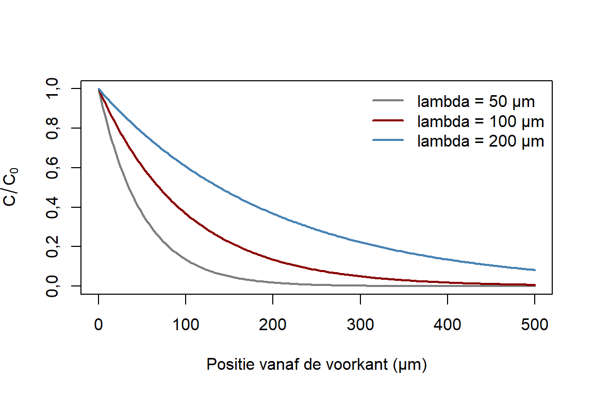
Een celkern “leest” zijn positie af uit de lokale concentratie. Door ruis is die aflezing onnauwkeurig. Hoeveel posities kan het embryo daardoor betrouwbaar onderscheiden? Dat is een vraag over wederzijdse informatie tussen positie en genexpressie, gemeten in bits. Dubuis et al. (2013) vonden dat elk gap-gen bijna 2 bits positionele informatie draagt, en dat vier gap-genen samen de positie van een cel bepalen tot op ongeveer 1 % van de lengte van het embryo. Diffusie, entropie en ontwikkeling komen hier samen.
4.6 Opdracht: het embryo pompt zichzelf op
Ongeveer drie dagen na de bevruchting ontstaat in een muizenembryo een vochtgevulde holte, het blastocoel. De buitenste cellaag, het trofectoderm, pompt met Na⁺/K⁺-ATPase natriumionen vanuit het cytoplasma richting de holte. Water volgt via aquaporines. De druk die zo in de holte ontstaat, bepaalt mee hoe groot het embryo wordt en welk lot de cellen krijgen (Chan et al., 2019).
Gebruik bij alle berekeningen \(T = 310\) K, \(k = 1{,}381 \cdot 10^{-23}\) J/K, \(R = 8{,}314\) J/(mol·K) en \(F = 96\,485\) C/mol. Werk in R en zet constanten bovenaan je code als variabelen. Noem de temperatuur niet T, want dat betekent TRUE in R. Let op eenheden: 1 mM = 1 mOsm/L (voor één soort deeltjes) = 1 mol/m³.
Neem voor de concentraties de volgende typische waarden aan:
| Ion | Cytoplasma (mM) | Holte (mM) |
|---|---|---|
| Na⁺ | 12 | 145 |
| K⁺ | 140 | 4 |
De membraanpotentiaal is \(-70\) mV (binnenkant negatief ten opzichte van de holte).
1. Diffusie in het vroege embryo
- Bereken met de Stokes–Einstein-relatie de diffusiecoëfficiënt in water bij 37 °C (\(\eta = 0{,}69\) mPa·s) van zuurstof (\(r = 0{,}17\) nm), glucose (\(r = 0{,}38\) nm) en een signaaleiwit (\(r = 2{,}5\) nm).
- Bereken voor elk molecuul hoe lang diffusie duurt over 100 µm (ongeveer de doorsnede van een blastocyst) en over 500 µm (de lengte van een Drosophila-ei).
- Maak in R een log–log-figuur van de diffusietijd tegen de afstand (1 µm tot 1 cm) voor de drie moleculen. Wat is de helling van de lijnen, en waarom?
- In cytoplasma is \(D\) voor eiwitten ongeveer vier keer kleiner dan in water. Wat betekent dat voor je antwoorden bij b? Leg uit waarom een gewerveld embryo van enkele millimeters een bloedsomloop nodig heeft.
TipUitwerking vraag 1
Code
kB <- 1.380649e-23 # J/K
Temp <- 310 # K
Eta <- 0.69e-3 # Pa s
Molecuul <- c("zuurstof", "glucose", "signaaleiwit")
Straal <- c(0.17e-9, 0.38e-9, 2.5e-9) # m
D <- kB * Temp / (6 * pi * Eta * Straal) # m^2/s
Tijd <- function(L, D) L^2 / (2 * D) # s
knitr::kable(data.frame(
Molecuul,
`D (um2/s)` = signif(D * 1e12, 2),
`t 100 um (s)` = signif(Tijd(100e-6, D), 2),
`t 500 um (s)` = signif(Tijd(500e-6, D), 2),
check.names = FALSE
))| Molecuul | D (um2/s) | t 100 um (s) | t 500 um (s) |
|---|---|---|---|
| zuurstof | 1900 | 2,6 | 65 |
| glucose | 870 | 5,8 | 140 |
| signaaleiwit | 130 | 38,0 | 950 |
a. Met \(D = kT/(6\pi\eta r)\) vind je voor zuurstof \(D \approx 1{,}9 \cdot 10^{-9}\) m²/s, voor glucose \(8{,}7 \cdot 10^{-10}\) m²/s en voor het signaaleiwit \(1{,}3 \cdot 10^{-10}\) m²/s. Het eiwit is ongeveer 15 keer zo groot als zuurstof en diffundeert dus ongeveer 15 keer zo langzaam.
b. Over 100 µm duurt diffusie voor zuurstof ongeveer 2,6 s, voor glucose 5,8 s en voor het eiwit 38 s. Over 500 µm (5 keer zo ver) duurt het 25 keer zo lang: 65 s, 2,4 min en 16 min.
Code
L <- 10^seq(-6, -2, length.out = 100) # 1 um tot 1 cm
Kleuren <- c("steelblue", "darkorange", "darkred")
plot(NA, xlim = range(L), ylim = c(1e-4, 1e6), log = "xy",
xlab = "Afstand L (m)", ylab = "Diffusietijd t (s)")
for (i in 1:3) lines(L, Tijd(L, D[i]), lwd = 2, col = Kleuren[i])
legend("topleft", Molecuul, lwd = 2, col = Kleuren, bty = "n")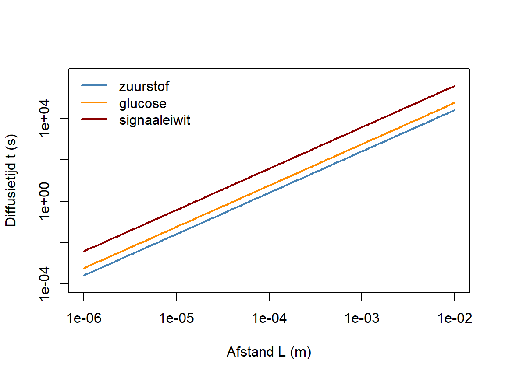
c. De helling is 2. Neem je de logaritme van \(t = L^2/2D\), dan krijg je \(\log t = 2 \log L - \log(2D)\): een rechte lijn met helling 2. De moleculen verschillen alleen in \(D\), dus alleen in het intercept. Daarom lopen de lijnen evenwijdig.
d. Als \(D\) vier keer kleiner is, duurt alles vier keer zo lang. Voor het eiwit wordt dat ongeveer 2,5 min over 100 µm en ongeveer 1 uur over 500 µm. Binnen een blastocyst is diffusie dus nog snel genoeg. Over enkele millimeters wordt het te traag, omdat de tijd met het kwadraat van de afstand groeit. 3 mm is 30 keer zo ver als 100 µm en duurt dus 900 keer zo lang. Voor het eiwit in cytoplasma is dat ongeveer 38 uur, en zelfs zuurstof in water doet er ongeveer 40 minuten over. De cellen verbruiken zuurstof veel sneller dan diffusie het over die afstand kan aanvoeren. Een bloedsomloop lost dat op met stroming (bulk flow): daarbij groeit de transporttijd evenredig met de afstand (\(t = L/v\)) in plaats van met het kwadraat ervan.
2. Osmose
- Bereken de osmotische druk bij een osmolariteitsverschil van 1 mOsm/L en van 0,1 mOsm/L.
- Neem aan dat de druk in het blastocoel 300 Pa boven die van de omgeving ligt. Welk osmolariteitsverschil is daarvoor nodig? Vergelijk dat met de totale osmolariteit van ongeveer 300 mOsm/L en geef je conclusie in één zin.
- Leg in termen van entropie uit waarom water de holte in stroomt, terwijl geen enkel watermolecuul “weet” waar de natriumionen zijn.
TipUitwerking vraag 2
Code
R <- 8.314 # J/(mol K)
Temp <- 310 # K
OsmotischeDruk <- function(mOsmL) mOsmL * R * Temp # 1 mOsm/L = 1 mol/m^3; resultaat in Pa
cat("Pi bij 1 mOsm/L: ", round(OsmotischeDruk(1)), "Pa\n")Pi bij 1 mOsm/L: 2577 PaCode
cat("Pi bij 0,1 mOsm/L:", round(OsmotischeDruk(0.1)), "Pa\n")Pi bij 0,1 mOsm/L: 258 PaCode
Druk <- 300 # Pa
Verschil <- Druk / (R * Temp) # mol/m^3 = mOsm/L
cat("Nodig verschil voor 300 Pa:", signif(Verschil, 2), "mOsm/L\n")Nodig verschil voor 300 Pa: 0,12 mOsm/LCode
cat("Als fractie van 300 mOsm/L:", signif(100 * Verschil / 300, 2), "%\n")Als fractie van 300 mOsm/L: 0,039 %a. Met \(\Pi = \Delta C\, RT\) en 1 mOsm/L = 1 mol/m³ geldt \(\Pi = 1 \cdot 8{,}314 \cdot 310 \approx 2{,}6\) kPa. Bij 0,1 mOsm/L is dat 258 Pa.
b. \(\Delta C = \Pi/RT = 300/2577 \approx 0{,}12\) mOsm/L. Dat is ongeveer 0,04 % van de totale osmolariteit van 300 mOsm/L. Conclusie: een minuscuul osmotisch verschil volstaat om de holte onder druk te zetten, dus het embryo hoeft geen grote concentratieverschillen op te bouwen.
c. Watermoleculen bewegen willekeurig door de aquaporines, beide kanten op, en elk afzonderlijk molecuul heeft daarbij dezelfde kans. In de holte zijn een paar plaatsen ingenomen door Na⁺ (en de bijbehorende Cl⁻), dus per volume zitten er iets minder watermoleculen. Daardoor gaan er per seconde meer watermoleculen de holte in dan eruit. In termen van entropie: als water zich mengt met de opgeloste deeltjes, neemt het aantal microtoestanden toe. De netto stroom is dus de beweging naar de meest waarschijnlijke verdeling, net als bij gewone diffusie. Die stroom stopt pas als de oplopende druk in de holte de chemische potentiaal van water aan beide kanten gelijk maakt (\(\Delta\mu_w = 0\)). In evenwicht zijn dus niet de concentraties gelijk, maar \(\Psi\).
3. De prijs van het pompen
- Bereken \(\Delta G\) (kJ/mol) voor het transport van Na⁺ van het cytoplasma naar de holte. Splits je antwoord in een chemisch en een elektrisch deel.
- Doe hetzelfde voor K⁺ van de holte naar het cytoplasma. Welk deel werkt hier mee en welk deel tegen?
- De pomp verplaatst per cyclus 3 Na⁺ naar buiten en 2 K⁺ naar binnen, en verbruikt daarbij 1 ATP. Bereken \(\Delta G\) per cyclus en vergelijk die met de vrije energie van ATP-hydrolyse in de cel (neem \(-55\) kJ/mol). Welk deel van de energie uit ATP wordt in de gradiënten opgeslagen?
- Zou een pomp die per ATP 4 Na⁺ en 2 K⁺ verplaatst thermodynamisch mogelijk zijn? Onderbouw met een berekening.
TipUitwerking vraag 3
Code
R <- 8.314; Temp <- 310; Fa <- 96485
RT <- R * Temp / 1000 # kJ/mol
PsiCyto <- -0.070; PsiHolte <- 0 # V
DeltaG_ATP <- -55 # kJ/mol
# a. Na+ van cytoplasma (12 mM) naar holte (145 mM), z = +1
NaChem <- RT * log(145 / 12)
NaElek <- 1 * Fa * (PsiHolte - PsiCyto) / 1000
Na <- NaChem + NaElek
# b. K+ van holte (4 mM) naar cytoplasma (140 mM), z = +1
KChem <- RT * log(140 / 4)
KElek <- 1 * Fa * (PsiCyto - PsiHolte) / 1000
K <- KChem + KElek
# c. en d. per cyclus
Cyclus3 <- 3 * Na + 2 * K
Cyclus4 <- 4 * Na + 2 * K
knitr::kable(data.frame(
Grootheid = c("Na+ chemisch", "Na+ elektrisch", "Na+ totaal",
"K+ chemisch", "K+ elektrisch", "K+ totaal",
"Cyclus 3 Na+ / 2 K+", "Cyclus 4 Na+ / 2 K+"),
`Delta G (kJ/mol)` = round(c(NaChem, NaElek, Na, KChem, KElek, K, Cyclus3, Cyclus4), 1),
check.names = FALSE
))| Grootheid | Delta G (kJ/mol) |
|---|---|
| Na+ chemisch | 6,4 |
| Na+ elektrisch | 6,8 |
| Na+ totaal | 13,2 |
| K+ chemisch | 9,2 |
| K+ elektrisch | -6,8 |
| K+ totaal | 2,4 |
| Cyclus 3 Na+ / 2 K+ | 44,3 |
| Cyclus 4 Na+ / 2 K+ | 57,5 |
Code
cat("Rendement 3:2-pomp:", round(100 * Cyclus3 / -DeltaG_ATP), "%\n")Rendement 3:2-pomp: 81 %a. Chemisch deel: \(RT\ln(145/12) = 2{,}58 \cdot \ln 12{,}1 \approx 6{,}4\) kJ/mol. Elektrisch deel: \(zF\Delta\psi = 96\,485 \cdot 0{,}070 \approx 6{,}8\) kJ/mol, want het positieve ion gaat van \(-70\) mV naar 0 mV. Totaal ongeveer \(+13{,}2\) kJ/mol. Beide delen werken tegen: Na⁺ gaat naar de kant met de hogere concentratie én de hogere potentiaal.
b. Chemisch deel: \(RT\ln(140/4) \approx +9{,}2\) kJ/mol, dat werkt tegen. Elektrisch deel: \(F \cdot (-0{,}070) \approx -6{,}8\) kJ/mol, dat werkt mee, want de negatieve binnenkant trekt het positieve ion aan. Totaal ongeveer \(+2{,}4\) kJ/mol. K⁺ naar binnen pompen is dus veel goedkoper dan Na⁺ naar buiten.
c. Per cyclus: \(3 \cdot 13{,}2 + 2 \cdot 2{,}4 \approx 44\) kJ/mol. ATP levert 55 kJ/mol, de som is \(-11\) kJ/mol, dus de cyclus kan verlopen. Ongeveer 80 % van de vrije energie van ATP wordt opgeslagen in de gradiënten; de rest verdwijnt als warmte.
d. \(4 \cdot 13{,}2 + 2 \cdot 2{,}4 \approx 57{,}5\) kJ/mol. Dat is meer dan de 55 kJ/mol die ATP levert, dus \(\Delta G_\text{totaal} \approx +2{,}5\) kJ/mol \(> 0\). Bij deze gradiënten is zo’n pomp thermodynamisch onmogelijk. Bij kleinere gradiënten zou het wel kunnen. De stoichiometrie 3 : 2 bepaalt dus hoe steil de gradiënten maximaal kunnen worden.
4. Evenwicht of stationaire toestand?
- Ouabaïne blokkeert de Na⁺/K⁺-ATPase. Voorspel wat er met de holte gebeurt als je een blastocyst met ouabaïne behandelt. Formuleer je voorspelling zo dat een experiment haar kan weerleggen.
- Leg uit waarom het blastocoel in een stationaire toestand verkeert en niet in evenwicht. Gebruik de begrippen \(\Delta G\), entropie en ATP.
- Bij vrije diffusie is de kans per molecuul om naar links of naar rechts te springen altijd gelijk. Hoe kan er dan toch een netto stroom ontstaan? En waarom zijn die kansen voor een Na⁺-ion in de membraanpotentiaal níet meer gelijk?
TipUitwerking vraag 4
a. Voorspelling: zonder werkende Na⁺/K⁺-ATPase wordt er geen Na⁺ meer naar de holte gepompt. Er ontstaat dus geen osmotisch verschil, en er stroomt geen water meer in. Wordt de blastocyst behandeld voordat de holte er is, dan vormt die zich niet. Is de holte er al, dan lekken ionen en water langzaam terug en krimpt ze. Een weerlegbare formulering: “Als de holte zich vult doordat Na⁺/K⁺-pompen een osmotisch verschil maken, dan neemt het volume van de holte in blastocysten met ouabaïne niet toe, terwijl het in onbehandelde controles wel toeneemt.” Groeit de holte met ouabaïne net zo hard als in de controles, dan is de hypothese weerlegd.
b. In evenwicht zou \(\Delta G = 0\) zijn voor elk ion en voor water, en zouden er geen netto stromen zijn. In het embryo is \(\Delta G\) voor Na⁺ ongeveer 13 kJ/mol: ionen lekken voortdurend passief terug langs hun gradiënt, en dat verhoogt de entropie. Dat de holte toch constant blijft (of groeit), komt doordat de pompen die lekstroom steeds compenseren met energie uit ATP (\(\Delta G \approx -55\) kJ/mol). Het is een stationaire toestand: constant in de tijd, maar met voortdurende stromen en energieverbruik. De entropie die daarbij ontstaat, gaat als warmte naar de omgeving. Stopt de ATP-aanvoer, dan glijdt het systeem af naar evenwicht en klapt de holte in.
c. Er is netto stroom omdat er aan de ene kant meer moleculen zijn die de kans krijgen om over te steken. De stroom is evenredig met \(p\,(n_L - n_R)\): de kans \(p\) is aan beide kanten gelijk, de aantallen niet. Voor een Na⁺-ion in de membraanpotentiaal verschilt de potentiële energie per kant (\(ze\psi\)). Dan worden de springkansen per molecuul ongelijk, met een verhouding die gelijk is aan de Boltzmannfactor \(e^{-\Delta U/kT}\). Bij \(-70\) mV aan de binnenkant is dat \(e^{F \cdot 0{,}070/RT} = e^{6{,}75/2{,}58} \approx 14\). Bij gelijke concentraties is een Na⁺-ion dus ongeveer 14 keer zo waarschijnlijk om naar binnen te springen als naar buiten. Dit is het elektrische deel van de elektrochemische gradiënt, nu als kans uitgedrukt.
4.7 Literatuur
- Abu-Arish, A., Porcher, A., Czerwonka, A., Dostatni, N., & Fradin, C. (2010). High mobility of Bicoid captured by fluorescence correlation spectroscopy: implication for the rapid establishment of its gradient. Biophysical Journal, 99, L33–L35.
- Berg, H. C. (1993). Random Walks in Biology (uitgebreide editie). Princeton University Press.
- Chan, C. J., Costanzo, M., Ruiz-Herrero, T., Mönke, G., Petrie, R. J., Bergert, M., Diz-Muñoz, A., Mahadevan, L., & Hiiragi, T. (2019). Hydraulic control of mammalian embryo size and cell fate. Nature, 571, 112–116.
- Dubuis, J. O., Tkačik, G., Wieschaus, E. F., Gregor, T., & Bialek, W. (2013). Positional information, in bits. PNAS, 110, 16301–16308.
- Einstein, A. (1905). Über die von der molekularkinetischen Theorie der Wärme geforderte Bewegung von in ruhenden Flüssigkeiten suspendierten Teilchen. Annalen der Physik, 17, 549–560.
- Gregor, T., Wieschaus, E. F., McGregor, A. P., Bialek, W., & Tank, D. W. (2007). Stability and nuclear dynamics of the Bicoid morphogen gradient. Cell, 130, 141–152.
- Phillips, R., Kondev, J., Theriot, J., & Garcia, H. (2013). Physical Biology of the Cell (2e ed.). Garland Science.
- Urry, L. A., et al. Campbell Biology: A Global Approach (12e ed.). Pearson. Hoofdstuk 8 en 36.